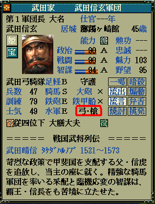
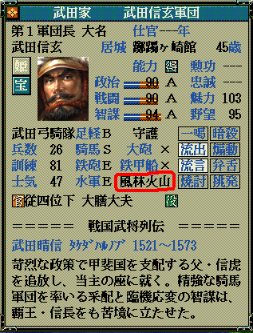
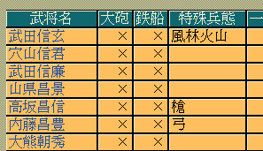

string カスタム::On_特殊兵態名表示直前(int 武将番号) {
return "";
}

string カスタム::On_特殊兵態名表示直前(int 武将番号) {
int iBushouID = 武将番号-1; // 武将番号→武将番号【配列用】に
if ( 0 <= iBushouID && iBushouID < 最大数::武将情報::配列数 ) {
if ( p武将戸籍情報[iBushouID].顔番号 == 顔番号::武田晴信 ) { // 武田信玄の顔＆列伝番号
return "風林火山";
}
}
// 変更しない場合""
return "";
}

